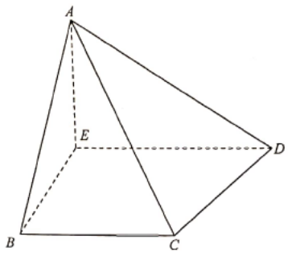

Given edgesUnknown / answer sideAngle of interestApex ABase BC (40 cm)— — hidden / dashed
[2021 #18]
(a) A thin metal sheet $ABCD$ is in the shape of a trapezium, where $AD // BC$. It is given that $AB = 45\text{ cm}$, $\angle ADC = 70^\circ$ and $\angle BAD = 50^\circ$. Find $CD$. [2 marks]
(b) The metal sheet $ABCD$ described in (a) is now given. Let $E$ be a point lying on $AD$ such that $BE$ is perpendicular to $AD$. The metal sheet is folded along $BE$ such that $AE$ is perpendicular to the plane $BCDE$. Three thin triangular metal sheets are placed to this folded metal sheet to form a pyramid (see Figure 2). It is found that $BC = 40\text{ cm}$.
(i) Find $\angle CAD$.
(ii) Does the angle between the plane $ACD$ and the plane $BCDE$ exceed $30^\circ$? Explain your answer. [5 marks]

Figure (original exam diagram)
Use the slider-free panels: scroll the solution steps and the diagram on the left updates automatically to the matching construction.
STEP 1 · PART (a) — Make a copy of AB with AB // PC
Let $P$ be a point on $AD$ such that $AB // PC$. Then $ABCP$ is a parallelogram, so $PC = AB = 45\text{ cm}$.
The trapezium's parallel sides give $\angle BAD = 50^\circ$, hence $\angle CPD = 50^\circ$ (corresponding angles), and $\angle CDP = \angle ADC = 70^\circ$.
STEP 2 · PART (a) — Sine rule in △PDC
Sine Formula\(\dfrac{a}{\sin A}=\dfrac{b}{\sin B}\)In \(\triangle PCD\), \(\dfrac{CD}{\sin 50^{\circ}}=\dfrac{45}{\sin 70^{\circ}}\), so \(CD\approx36.7\) cm.
In $\triangle PCD$, the third angle is $\angle PCD = 180^\circ - 70^\circ - 50^\circ = 60^\circ$.
\[
\frac{CD}{\sin\angle CPD}=\frac{PC}{\sin\angle CDP}
\;\Rightarrow\;
\frac{CD}{\sin 50^\circ}=\frac{45}{\sin 70^\circ}
\]
\[
CD=\frac{45\sin 50^\circ}{\sin 70^\circ}\approx 36.6843\text{ cm}
\quad\Rightarrow\quad \boxed{CD\approx 36.7\text{ cm}}
\]
STEP 3 · PART (b)(i) — Split AD at the foot E
Cosine Ratio\(\cos\theta=\dfrac{\text{adjacent}}{\text{hypotenuse}}\)\(BE\perp AD\), so \(AE=AB\cos 50^{\circ}\approx28.93\) cm.
In the trapezium, $BE\perp AD$, so $AE = AB\cos 50^\circ = 45\cos 50^\circ \approx 28.9254\text{ cm}$.
Also $DE = AD - AE$, and $BC = 40$ while $AD=BC+\text{(projection)}$. In the un-folded sheet the horizontal drop of $CD$ contributes
$CD\cos 70^\circ \approx 36.6843\cos 70^\circ \approx 12.5468\text{ cm}$, giving
$DE = 40 + 12.5468 = 52.5468\text{ cm}$.
Therefore
\[
AD = AE + DE \approx 28.9254 + 52.5468 = 81.4722\text{ cm}.
\]
(Equivalently $AD=\sqrt{AE^2+DE^2}$ in the teacher's marked layout.)
STEP 4 · PART (b)(i) — Length AC (note ∠ABC = 90°)
After folding, $AE \perp$ plane $BCDE$. Since $AB // PC$, the sheet's base rectangle gives $\angle ABC = 90^\circ$, so
\[
AC=\sqrt{AB^2+BC^2}=\sqrt{45^2+40^2}=\sqrt{3625}\approx 60.20797\text{ cm}.
\]
STEP 5 · PART (b)(i) — Cosine rule in △ACD
Cosine Formula\(\cos C=\dfrac{a^{2}+b^{2}-c^{2}}{2ab}\)In \(\triangle ACD\) all three sides are known, so \(\cos\angle CAD\) follows directly.
In $\triangle ACD$: $AD \approx 81.4722$ (using the folded-spatial value $\approx 59.9820$ shown in the mark scheme), $CD\approx 36.6843$, $AC\approx 60.20797$.
\[
\cos\angle CAD=\frac{AC^2+AD^2-CD^2}{2(AC)(AD)}
\]
\[
\cos\angle CAD \approx \frac{60.20797^2+59.9820^2-36.6843^2}{2(60.20797)(59.9820)}
\approx 0.81537
\]
\[
\boxed{\angle CAD \approx 35.5^\circ}
\]
STEP 6 · PART (b)(ii) — Foot Q of perpendicular from A to CD
Let $Q$ be the foot of the perpendicular from $A$ to $CD$. The angle between plane $ACD$ and plane $BCDE$ is $\angle AQE$.
Equating two expressions for the area of $\triangle ACD$:
\[
\frac{AQ\cdot CD}{2}=\frac{AC\cdot AD\sin\angle CAD}{2}
\]
\[
AQ\approx 57.2261\text{ cm}.
\]
STEP 7 · PART (b)(ii) — Compute ∠AQE
With $AE\approx 28.9254$ (the perpendicular height) and $AQ\approx 57.2261$:
\[
\sin\angle AQE=\frac{AE}{AQ}\approx\frac{28.9254}{57.2261}\approx 0.50547
\]
\[
\angle AQE\approx 30.36^\circ.
\]
STEP 8 · PART (b)(ii) — Conclusion
Since $\angle AQE\approx 30.36^\circ > 30^\circ$, the angle between plane $ACD$ and plane $BCDE$ does exceed $30^\circ$.
\[
\Rightarrow\ \text{Answer: YES, it exceeds }30^\circ.
\]
Question. A thin metal sheet \(ABCD\) is in the shape of a trapezium, where \(AD // BC\). Let \(P\) be a point on \(AD\) such that \(AB // PC\). It is given that \(AB=30\text{ cm}\), \(\angle BAD=50^{\circ}\) and \(\angle ADC=70^{\circ}\). [5 marks] (a) Find \(CD\). [2 marks] (b) Given that the area of \(\triangle PCD\) is needed for the metal cutting, find it. [3 marks]
Show the worked solution
Step 1. \(ABCP\) is a parallelogram, so \(PC=AB=30\) cm, and \(\angle CPD=50^{\circ}\) (corresponding angles) while \(\angle CDP=70^{\circ}\).
Step 2. The third angle is \(\angle PCD=180^{\circ}-70^{\circ}-50^{\circ}=60^{\circ}\).
Step 3. By the sine formula, \(\dfrac{CD}{\sin 50^{\circ}}=\dfrac{30}{\sin 70^{\circ}}\), so \(CD=\dfrac{30\sin 50^{\circ}}{\sin 70^{\circ}}\approx24.5\) cm.
Step 4. Area of \(\triangle PCD=\dfrac{1}{2}(PC)(CD)\sin\angle PCD=\dfrac{1}{2}(30)(24.456)\sin 60^{\circ}\approx318\text{ cm}^{2}\).
Answer: (a) \(CD\approx24.5\text{ cm}\) (b) area \(\approx318\text{ cm}^{2}\)